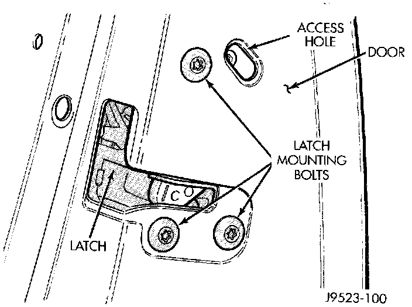
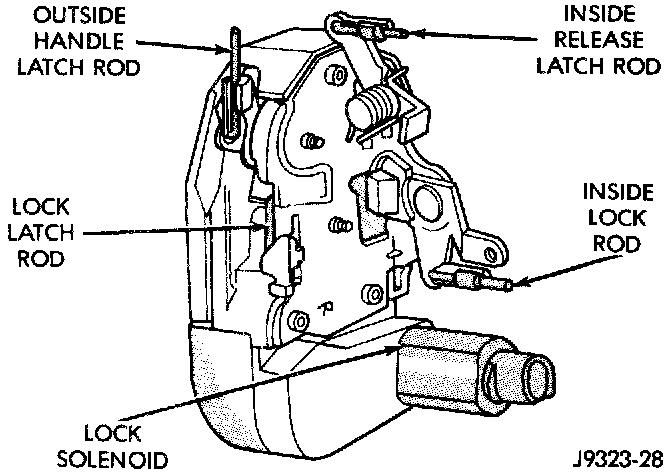
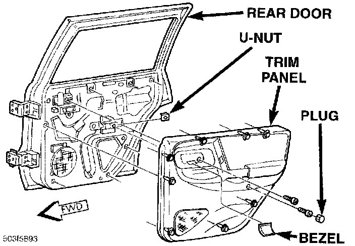
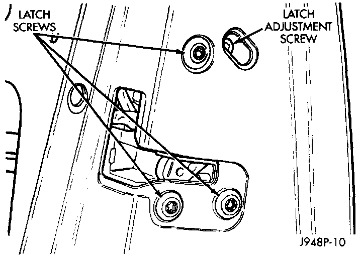

Power Door Lock Actuator: Service and Repair
REMOVALFront Door
1. Remove the front door trim panel.
2. Pull back the watershield from the rear access holes of the inner door panel.
Door Latch Remove/Install:

3. Remove the screws that secure the power lock motor and latch assembly to the door.
Door Latch:

4. Disconnect all of the latch linkage rods from the door latch.
5. Pull the power lock motor and latch out from the door far enough to unplug the wire harness connector.
6. Remove the power lock motor and latch assembly from the door.
7. Reverse the removal procedures to install. Tighten the power lock motor and latch screws to 10 N.m (95 in. lbs.).
Rear Door
1. Disconnect and isolate the battery negative cable.
2. Remove the bezel near the inside door latch release handle by inserting a straight-bladed screwdriver in the notched end and prying gently upwards.
Rear Door Trim Panel Remove/Install:

3. Remove the door trim panel mounting screw located in the bezel opening near the inside door latch release handle.
4. Remove the trim cap and screw near the rear of the door armrest.
5. Using a wide flat-bladed tool such as a trim stick, pry the trim panel away from the door around the perimeter and remove the trim panel.
NOTE: To aid in the removal of the trim panel, start at the bottom of the panel.
6. Unplug the wire harness connector from the door power window switch.
7. Pull back the watershield from the rear access holes of the inner door panel.
Door Latch Remove/Install - Typical:

8. Remove the screws that secure the power lock motor and latch assembly to the door.
9. Disconnect all of the latch linkage rods from the door latch.
10. Pull the power lock motor and latch out from the door far enough to unplug the wire harness connector.
11. Remove the power lock motor and latch assembly from the door.
12. Reverse the removal procedures to install. Tighten the power lock motor and latch screws to 10 N.m (95 in. lbs.).